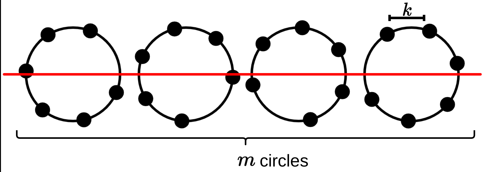
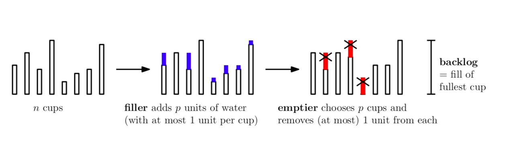
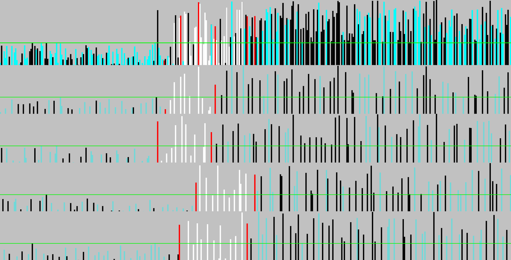

Alek Westover

I'm a student and researcher at MIT. I've done research in data structures, online algorithms, and algorithmic graph theory.
Email: alekw at mit dot edu
Publications
-
"Listing 6-Cycles in Sparse Graphs"
Virginia Vassilevska Williams, Alek Westover
Under submission. -
"The Diamond Test: A Novel Direct Sum / Affinity Test"
Alek Westover, Edward Yu, Kai Zheng
Under submission. -
"When to Give Up on a Parallel Implementation"
Nathan S. Sheffield, Alek Westover
Under submission. -
“A Nearly Quadratic Improvement for Memory Reallocation” (SPAA'24) (Slides)
Martin Farach-Colton, William Kuszmaul, Nathan Sheffield, and Alek Westover -
“Scheduling Jobs with Work-Inefficient Parallel Solutions” (SPAA'24) (Slides)
William Kuszmaul and Alek Westover -
“Complexity of Multiple-Hamiltonicity in Graphs of Bounded Degree”
Brian Liu, Nathan S. Sheffield, Alek Westover -
“On the Relationship Between Several Variants of the Linear Hashing Conjecture”
Alek Westover -
“The Variable-Processor Cup Game” (ITCS'21) (Slides)
William Kuszmaul and Alek Westover -
“Cache-Efficient Parallel-Partition Algorithms using Exclusive-Read-and-Write Memory” (SPAA'20) (Animation) (GitHub)
William Kuszmaul and Alek Westover




Blog
I have a blog which consists of notes from various math problems that I think about and also some philosophy.
Here are some of the best posts:
- hashing: Contemplations on what I enjoy about research.
- Truth: Contemplations on the importance of "working out the details carefully" in math.
- Girth: Some notes I took while reading literature on girth for a research project.
- Sketching: Notes on Sketching Algorithms, presented through dialogue of occasionally recurring characters of the blog.
- k-server on a circle: Attempting to solve a problem I read about in a paper.
- simply periodic binary functions: A neat number-theoretic bijection.
Tutoring Services
I enjoy helping people understand math and computer science. I offer private tutoring in the following subjects:
- Calculus
- Programming (python, javascript)
- Algebra
- Linear Algebra
- Computer Science
- Competition Math
Contact me for more information.
Alek Westover CV (PDF)